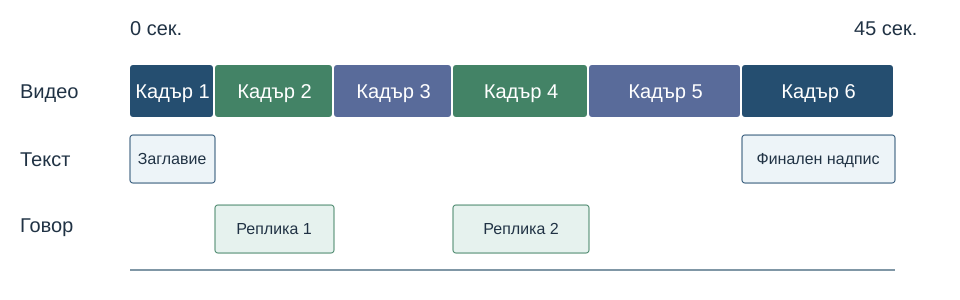

След урока ще можете да:
- подбирате и подреждате кадри върху времева линия;
- изрязвате ненужните части и добавяте заглавие, субтитри и съгласуван звук;
- различавате монтажен проект от готов видеофайл и проверявате експорта.
1. Материали и монтажен проект
Използвайте плана и записите от урок 33. Първо прегледайте кадрите и изберете тези с ясно действие, стабилна картина и подходящ звук.
Монтажният проект запазва подредбата, изрязванията, текстовете и настройките на редактора. Експортираният видеофайл е готовият резултат за гледане. Проектът често съдържа връзки към изходните записи, затова пазете нужните файлове достъпни.
Следващите стъпки използват Shotcut като пример. В друг наличен видеоредактор потърсете съответните команди за импорт, времева линия, разделяне, текст, звук и експорт.
- Създайте проект с подходящо име.
- Съобразете ориентацията и видео режима със заснетата серия.
- Отворете подбраните записи и ги подредете в списъка с материали.
- Запазете проекта и добавете кадрите към Timeline в реда от сценария.
2. Изрязване, разделяне и подреждане
Изрязването (trim) променя началото или края на използвания откъс. Разделянето (split) създава части в избрана позиция, които можете да подредите отделно.
- Премахнете разтърсеното начало и ненужното чакане в края чрез изрязване на клипа върху времевата линия.
- Ако има неподходяща част по средата, поставете курсора в началото и края ѝ и разделете клипа. В Shotcut командата Split е с клавиша S, когато работите в подходящия изглед.
- Отстранете ненужната част от времевата линия и проверете дали не е останала празнина.
- Подредете общия, средния и близкия план така, че действието да се разбира.
- Прегледайте връзките между кадрите. Започнете с обикновени срезове; добавяйте преход само когато помага.
Промените върху времевата линия определят използваните части. Те не изискват да изтривате изходните видеофайлове.

3. Заглавие и субтитри
Добавете кратко заглавие в началото и при нужда финален надпис. В Shotcut можете да използвате текстов филтър, например Text: Simple, върху клип или отделен текстов елемент. Оставете достатъчно време за прочитане.
Субтитрите предават речта и нужните звукови пояснения във времето. Те се различават от заглавието на видеото. Проверете думите, правописа и момента на появяване.
- В Shotcut отворете панела View → Subtitles, ако е наличен във вашата версия.
- Добавете или импортирайте субтитрите и съгласувайте началото и края им с речта.
- За постоянно видими субтитри приложете Subtitle: Burn In към изхода на времевата линия и изберете съответната субтитрова писта.
- Прегледайте резултата: текстът трябва да е четим и да не закрива важно действие.
При по-опростен редактор можете да добавите синхронизирани текстови елементи върху кадрите. Ако използвате автоматично разпознаване на реч, проверете всяка реплика. Вградените в картината субтитри стават част от изображението и не могат да се изключват отделно.
4. Съгласуване на звука
Изслушайте целия монтаж. Речта трябва да остава разбираема, а силата ѝ — приблизително съгласувана между откъсите.
- Намалете излишния фонов звук, който пречи на гласа.
- Ако има музика, намалете я под речта и проверете с обикновена сила на слушане.
- Следете измерителя за ниво на звука. Претоварването може да предизвика изкривяване; само намаляване на силата след вече лош запис не възстановява изгубения звук.
- При нужда добавете кратко плавно начало или край на аудиото.
- Проверете дали изрязването на картина не е отрязало дума.
Когато изходният говор е неразбираем, обмислете нов запис. За музиката използвайте материали с подходящо разрешение и запишете източника.
5. Експортиране за уеб
- Запазете монтажния проект.
- Отворете Export / експортиране на видео. В Shotcut проверете полето From и изберете времевата линия, за да изнесете целия монтаж.
- За упражнението използвайте MP4 с видео H.264 и съвместим звук, например AAC, когато тези настройки са налични.
- Изберете размер според проекта — например 1080p при достатъчно качествен източник или 720p за по-малък вариант. Запазете правилната ориентация и пропорции.
- Експортирайте файла, например
34-club.mp4, и изчакайте задачата в редактора да завърши. - Отворете получения файл извън редактора и прегледайте от началото до края.
Разширението MP4 посочва контейнера; използваните кодеци също влияят върху възпроизвеждането. Не преименувайте проектния файл на MP4. За сравнение изнесете и по-малък вариант със същия монтаж и проверете действителния обем, детайлите, текста и звука.
6. Поставяне в HTML страница
При субтитри, които вече са част от картината, поставете видео с controls и подходящ source. Ако искате отделно включване на надписи в браузъра, използвайте WebVTT файл с track:
<video controls preload="metadata">
<source src="34-club.mp4" type="video/mp4">
<track kind="captions" src="captions.bg.vtt"
srclang="bg" label="Български" default>
Вашият браузър не поддържа видео.
</video>
<p><a href="34-club.mp4">Отвори видеото</a></p>video { max-width: 100%; height: auto; }Заменете имената с действителните си файлове. Изтеглете примерен WebVTT файл по репликите от сценария в урок 33 и коригирайте текста и времената за вашето видео.
SRT и WebVTT са различни формати. За WebVTT началният ред е WEBVTT, а времевите обозначения използват точка пред милисекундите. Самото преименуване на SRT файл не прави преобразуване.
Изберете как ще представяте надписите, за да не се дублират вградени и отделни субтитри. При директно локално отваряне браузърът може да ограничи зареждането на отделния track файл; проверете го и през страницата на сайта.
7. Практическа задача и краен преглед
- Монтирайте собствено видео от 30–60 секунди по плана от урок 33.
- Използвайте 5–8 подбрани кадъра и премахнете ненужните части и празнини.
- Добавете четимо заглавие и правилно синхронизирани субтитри към речта.
- Съгласувайте звука и проверете дали всяка дума се разбира.
- Запазете проекта и експортирайте готовото видео.
- Проверете файла извън редактора и го поставете в HTML страница с controls и гъвкава ширина.
- Запишете продължителността, размерите в пиксели, файловия обем и едно подобрение след прегледа.
Резултат: монтажен проект, експортирано видео, HTML страница и кратък отчет. Ако субтитрите са отделни, включете и техния файл.
8. Самопроверка
Save и Export едно и също ли правят?
Save запазва работата в проекта; Export създава отделен файл за възпроизвеждане.
Защо проверяваме празнините между клиповете?
Те могат да създадат неочаквана пауза или празна картина в готовото видео.
Какво проверяваме при субтитрите?
Съответствие с речта, правопис, синхрон, четимост и подходящо място в кадъра.
Достатъчно ли е видеото да изглежда добре в редактора?
Не. Трябва да проверим действително експортирания файл, звука, надписите и възпроизвеждането в страницата.